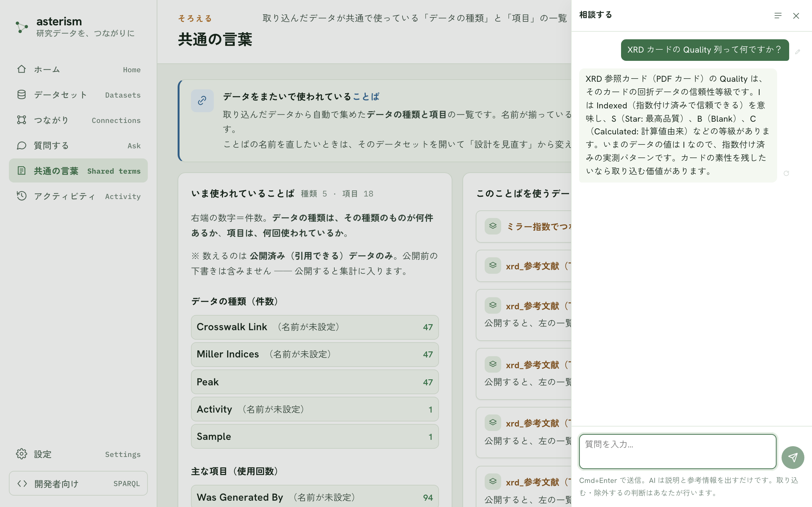

相談チャット — 設計中の疑問を、画面を離れずに聞く
どの画面にもある右下の「AI に相談」ボタンを押すと、右側にチャットが開きます。「この列って何？」「この画面はどう使う？」のような、データを取り込んでいる最中の疑問を、Google 検索や同僚への質問で画面を離れることなく、その場で聞けます。

判断はあなたが行います
相談チャットの AI は、説明と参考情報を出すだけです。列を取り込むか・除外するか、意味や単位をどう書くかの最終判断は、常にあなたが行います（入力欄の下にも、この約束が常に表示されています）。AI の答えをそのまま信じるのではなく、実データと突き合わせて確かめる材料として使ってください。
いま見ている画面のことは、伝えなくても伝わる
かんたんモードのウィザードの途中で開くと、いまのステップ・データセット名・データの数えかたの要約が自動で AI に伝わります。「項目の意味」の画面では、画面に表示されている表——まだ取り込んでいない項目（列名と実データの例）や、意味が入っている項目（列名・意味・単位）——も自動で伝わるので、「まだ意味が入っていない列を教えて」のような、表全体を見わたす相談もそのままできます。さらに列の意味の欄にカーソルを置いてから相談すると、その列に注目していることが伝わり、「この列はどういう意味？」とだけ書いても、いま見ている列のこととして答えてくれます。
送信のしかた
質問を書いて Cmd+Enter（Windows では Ctrl+Enter）で送信します。素の Enter は改行です。回答を待っている間に「止める」ボタンで打ち切れます。
チャットの履歴
チャットは自動で保存されます。ヘッダの履歴アイコンから一覧を開き、「+ 新しいチャット」ボタンで新しく始める・過去のチャットを選んで続きを話す・チャットを検索する・削除する、ができます。次に開いたときは、最後に使ったチャットから再開します。
聞き直す・作り直す
- 自分の発言にマウスを重ねると出る編集ボタンで、その発言を書き直して「編集して再送信」ボタンを押せます。それ以降のやり取りは消えて、書き直した内容で答え直します。
- AI の回答にマウスを重ねると出る「この回答を作り直す」ボタンで、同じ質問にもう一度答えさせられます。
AI の候補を表に反映する
「項目の意味」や「データの数えかた」の画面で相談していて、AI が列の意味・単位・種類の名前の候補を出したときは、回答の下に「この候補を表に反映」ボタンが出ることがあります。押すと、まだ空欄になっている項目だけに候補が書き込まれます。すでにあなたが入力した内容は上書きされず、取り込む・取り込まないの判断も変わりません。反映したあとも、表の上でいつでも直せます。
「質問する」との違い
- メニューの「質問する」は、公開したデータの中身への質問です。答えには出どころが付き、数字の根拠をたどれます（ask.md）。
- 相談チャットは、設計中の疑問や使い方の相談窓口です。データの中身は検索しません。
使う AI
相談チャットは、左下の「設定」の「AI」タブで選んだ AI を使います。サーバにAI が設定されている場合は、自分で設定しなくてもそのまま使えます（settings.md）。
関連
- 使い方全般の流れ: getting-started.md
- 公開したデータへの質問: ask.md